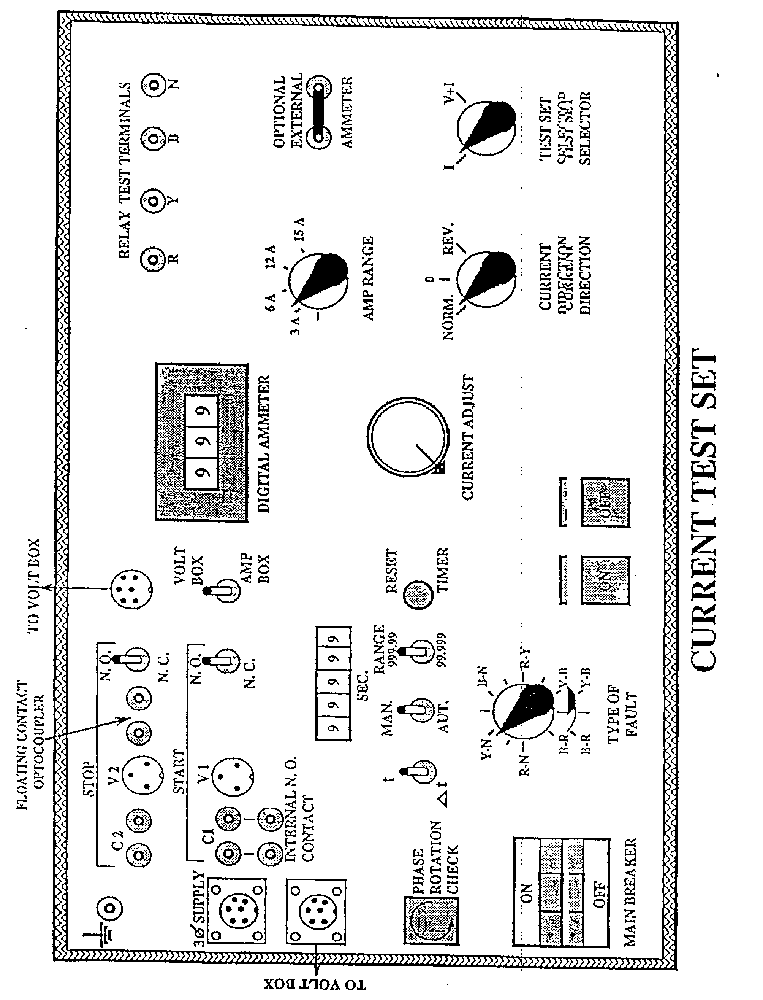
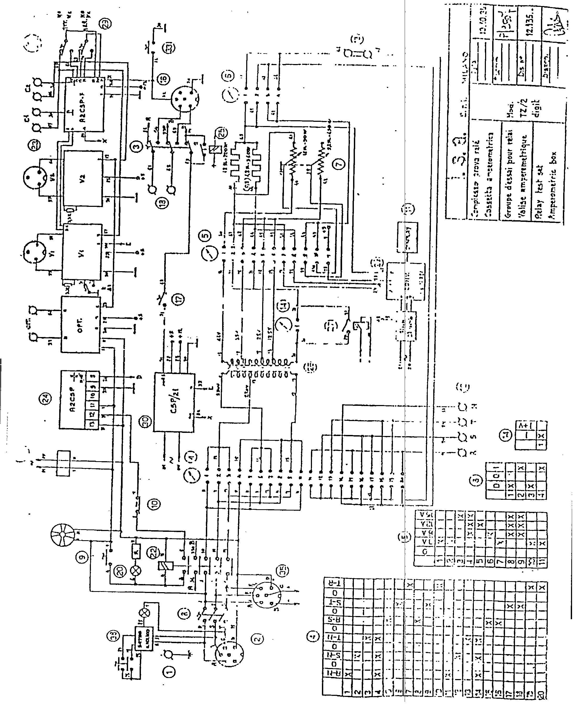

|
 |
|
Protection |
Technical
Procedure | |
|
Equipment:
Relay Calibration
TZ/2
CEE |
Document No: PC-002-r0 |
|
Issued to:
Networks |
|
Status:
APPROVED |
|
Procedure:
Using Type
TZ/2 Relay Test Set Test |
Approved Date: 23 Dec1996 |
|
MDate to be
Reviewed: Dec 2001 |
Introduction
The TZ/2 test set is designed to perform all normal tests
for voltage, current, and ground directional and distance relays. The set is
made up of two separate boxes, which can be used independently of each
other. Please refer to the diagrams on page 8 and 9. An optional phase shifter can also be connected to the voltage test set.
Safety Preacautions
-
When removing relays for bench testing ensure that the CT
secondary circuits are short circuited.
-
Ensure that injected test currents only supply the relay
under test.
-
When using the test set, it should always be connected to
a station earth point via the yellow earth plugs.
Work to be Carried Out
INDEPENDENT VOLTAGE TESTS
(Using the Voltage Set to check under-voltage (#27) and
overvoltage (#59) relays.)
Under-voltage relays are typically used where a decrease in
the normal voltage supply level triggers a protection event such as tripping,
reclosure or an alarm. In most cases, the relay operate time for an
under-voltage condition is not critical. Consequently, this procedure details
the simple steps to determine the actual under and over-voltage calibration
points. Use of the timer is therefore presented as a separate section in this
document.
INITIALIZATION of the VOLTAGE
TEST SET:
-
Place the three shorting plugs in the terminals R, Y, B
to jumper out the terminals for the optional phase shifter, which is not
required for these tests.
-
Turn the two Phase Adjust knobs to indicate zero degrees.
-
Rotate the large Fault Voltage Adjustment knob to the
minimum voltage level by turning it to the fully counterclockwise position.
-
Turn the Fault Voltage Range switch to the desired (10 or
60 volts) level. Remember that these maximum values will be increased by 3
to 17.32 or 103.92 volts when the Type of Fault selector indicates
phase-to-phase faults.
-
Turn the Type of Fault switch to select either a phase-to
neutral fault or a phase- to-phase fault.
-
Connect the voltage coil of the relay under test to the
appropriate Relay Test Terminals in agreement with the type of fault
selected above.
-
Connect a three phase 220/380supply to the Voltage Test
Set using one of the following two methods:
i)Use the connector cable with a connector on one end and banana plugs/clips
on the other end. first attach the connector end to the voltage test set and
carefully connect the banana plugs/clips to a three-phase supply.
Or:
ii) Use the cable mentioned before, but this time it
should be attached via the connector end to the Current Test Set. Then use
the supplied inter-test set connector cable to supply the Voltage Set from
the Current Set. When using this arrangement, the main breaker on the Current
Test Set must be closed before the supply will be available at the
Voltage Set.
- Energize the Voltage Test Set by pushing the white 'ON' Pushbutton. The
red 'OFF' pushbutton will now be lit to indicate that the test voltage
circuit is alive and that the voltage to the relay under test can be
disabled by pushing the 'OFF'' pushbutton.
TESTING of the UNDERVOLTAGE (#27)
RELAY:
-
To check the under-voltage setting, energize the Voltage
Test Set by one of the above methods and increase the voltage by turning the
large Fault Voltage knob clockwise until the voltmeter indicates the normal
operating voltage. Slowly decrease the voltage until the under-voltage relay
drops out.
-
Put the test switch on the right bottom corner of voltage
test set on start position.
-
Repeat the above step three times to determine the
average drop-out value.
-
Record this under-voltage drop-out value on the
maintenance test sheet.
TESTING of the OVERVOLTAGE (#59)
RELAY:
Note:
Maximum Output voltage from the tester is { (3) (60) }
volt. Therefore, it is not possible to calibrate over-voltage relays rated at
100 volts or above.
-
To check the over-voltage setting, energize the Voltage
Test Set as described above, and then increase the voltage by turning the
large Fault Voltage knob clockwise until the voltmeter indicates the normal
operating voltage. Slowly increase the test voltage until the over-voltage
relay picks-up.
-
Repeat the above step three times to determine the
average pick-up value.
-
Record this overvoltage pick-up value on the maintenance
test sheet.
INDEPENDENT CURRENT TESTS
(Using the Current Test Set to check instantaneous (#50) and
timed (#51) overcurrent relays
Initialization of the Current
Test Set
Initially
set the Current Test Set switches in the following positions:
-
Main Breaker switch to 'OFF'.
-
Current Adjust rheostat to minimum. (Fully
counterclockwise)
-
Amp Range switch to minimum. (3 amps)
-
Current Direction switch to 'Normal'.
-
Test Set Selector switch to I. (Current only)
-
Tighten the metal link to short the optional ammeter
binding posts. If an additional meter is desired, the additional ammeter
should be attached and then the link opened.
-
Turn the Type of Fault witch to select the desired
(phase-to-neutral or phase-to- phase) fault.
-
Connect the relay under test to the appropriate Relay
Test Terminals.
-
Connect the three-phase supply to the Current Set as
described previously.
-
Turn on the three-phase switch of the Main Breaker.
T
ESTING
INSTANTANEOUS OVERCURRENT RELAYS
-
Energize the Current Test Set by pushing the whit ‘ON’
pushbutton. The red ‘OFF’ pushbutton will now be lit to indicate that
the test current circuit is alive and current to the relay under test can be
disabled by pushing the 'OFF' pushbutton.
-
Gradually increase the test current by rotating the large
Current Adjustment knob in a clockwise direction, unit the relay picks up.
If, when the knob has been turned fully clockwise and the relay still does
not pickup, then the knob should be returned to its minimum position (fully
counterclockwise), and then the Ampere Range switch moved to the next higher
current position.
-
After moving the Amp Range switch to the next higher
position, repeat the above step until the relay operates.
-
Once the relay operates, leave the Current Adjust knob in
that position and disable the current by pushing the ‘OFF’ pushbutton.
If necessary allow the relay to reset.
-
Press the ‘ON’ pushbutton and observe whether the
relay instaneously picks up.
-
If the relay fails to pickup, slightly increase the fault
current and repeat the test.
-
Repeat this instantaneous test three times to determine
the average pick-up value.
-
Record the instantaneouse pick-up value on the
maintenance test sheet.
TESTING, TIMED OVERCURRENT (#51)
RELAYS
General: Normally, two types of tests are performed
to check timed overcurrent relays. These are the basic minimum pick-up test
and then several (3 to 5) time tests are performed at various current levels
to determine the relay operate time for various levels of fault currents.
Definite time relays should be checked at their normal time and current
setting values only
To determine the B asic Minimum Pick-up value, follow the
same initialization procedure as outlined before for instantaneous relays.
-
Rotate the Current Adjust knob until the relay disk just
begins to rotate or the contact just begins to leave the backstop and note
this value.
-
Repeat the above test three times to determine the
average Minimum Pick-up value of the relay and record this value on the
maintenance sheet.
TESTING, TIMED OVERCURRENT (#51)
RELAYS (Cont'd.)
-
Determine the normal operating range of the relay and
select (3 to 5) test currents to check the relay timing characteristics.
(Refer to the manufacturer's test curves for comparison to the test
calibration curves.)
-
Energize the Test Set as previously described and adjust
the test current to the desired calibration level.
-
Push the 'ON' pushbutton and adjust the current to the
desired test level. Leave the Current Adjust rheostat at this setting.
-
Disable the test current by pushing the 'OFF' pushbutton.
-
Jumper the N.O. (normally open) internal contact to the
C1 timer start terminals using the two black jumper plugs. This arrangement
allows the timer to start once the current is flowing to the relay under
test.
-
Initially set the timer control switches to the following
positions:
-
Start module switch to 'AMP BOX'
-
Measurement mode switch to t .
-
Start contact mode switch to N.O.
-
Stop contact mode switch to N.O. or N.C. (normally
closed) as required.
-
Connect a stop timer signal from the relay to the Current
Test Set using one of the following three methods:
i) Dry (no voltage) relay stop contacts should be connected
across the C2 Stopbinding posts. Switch the N.O./N.C. stop switch to properly
represent the normal position of these contacts before the relay operates.
Or
ii) If there is a long distance between the Test Set or
high inductive interference, the dry contacts from the relay may not properly
stop the timer. In these casesthe Floating Contact Optocoupler Stop contact
should be used.
Or
iii) Contacts which have voltage on them once the relay
picks-up, should beconnected to the Test Set via the V2 voltage input plug and
the corresponding cable. Voltages in the range of 24 to 220 volts d.c or a.c.
can be used.
NOTE: No external voltage should be applied to terminals
C1, C2 or the floating ContactOptocoupler input terminals!
-
Reset the timer by pushing the timer reset pushbutton
Press the 'ON' pushbutton to start the timer and start the test current flow
to the relay. Be sure to allow the relay to reset between the tests. The
timer should stop once the relay has picked-up.
-
Repeat the test to determine the average timed pick-up
point for this current level. Record the, test current value and the relay
operate time on the maintenance sheet.
-
Repeat the steps above using other appropriate current
levels and compare all results of these time curves to the manufacturer's
data sheet for the relay.
TESTING~'DISTANCE (#21) and
GROUND DIRECTIONAL (#67) RELAYS
General: These relays require both a test current and
test voltage to operate. Many of the steps previously given for independent
use of the Current and Voltage Test Sets will also apply here. The main
difference is that the phase angle of the current with respect to the voltage
and the direction of the current are critical to the proper calibration of
these relays.
-
Interconnect the power supply between the two test sets
and initialize the Current and Voltage Test Sets as previously described.
-
Check for proper phase rotation of the supply voltage by
pushing the phase rotation check button. The push-button will glows green
for proper phase rotation and will not light if phase rotation is incorrect.
-
Turn both, of the large Current and Voltage Adjustment
knobs to their minimum position. (fully counterclockwise)
-
The Test Start switch, located on the voltage box, should
be switched to the start position. This allows initial adjustment of the
voltage to the desired fault level.
-
Adjust the voltage box to the desired fault voltage level
and phase angle using the appropriate selector knobs. Remember to always
reduce the large rheostat knobs to their minimum setting (fully cow) before
changing the corresponding current or voltage range selector switches.
-
Turn the (2) Phase Adjustment knobs on the voltage box to
select the desired phase angle of the current with respect to the voltage.
The following table gives the possible combinations:
|
Phase Angle |
Phase Adjust Position |
|
Bottom Selector |
Top Selector |
|
15ْ
Lead |
0ْ |
+15ْ |
|
15ْ
Lag |
0ْ |
-15ْ |
|
45ْ
Lag |
-60ْ |
+15ْ |
|
60ْ
Lag |
-60ْ |
0ْ |
|
75ْ
Lag |
-60ْ |
-15ْ |
|
90ْ
Lag |
-90ْ |
0ْ |
|
105ْ
Lag |
-90ْ |
-15ْ |
|
120ْ
Lag |
-120ْ |
0ْ |
|
135ْ
Lag |
-120ْ |
-15ْ |
TESTING
DISTANCE and GROUND DIRECTIONAL RELAYS (cont'd.)
-
The optional phase shifter can also be added to the
Voltage Test Set for increased accuracy. If desired, connect the phase
shifter by removing the Voltage Set jumpers.
-
On the Current Test Set, turn the Test Set selector knob
to the 'V+I' position. This allows the fault current to circulate at the
same time that the fault voltage is applied. Similarly, on the Voltage Test
box the Timer Test mode switch should be selected to indicate 'V+I'.
-
Preset both the voltage and Amp boxes for the Type of
Fault (Phase-to-Neutral or Phase-to-Phase) by means of the selector switches
on each box.
-
Connect the relay under test to the appropriate voltage
and current Relay Test Terminals Qn the test sets.
-
To properly check the operating point of the distance
relay, the (fault) voltage should be raised to the normal level with a fixed
current flow and then the voltage reduced until the desired zone of the
relay operates.
-
Repeat the above step three times to determine the
average zone operating point.
-
Record the test current value, the fault voltage and the
phase angle.
-
Calculate the operating point of this zone and record
this point on an R-X diagram.
-
Change the phase angle and repeat the steps above to
calculate other operating points and also record these points on the R-X
diagram.
-
Repeat for the other Zones.
-
Continue the steps above until a good graph is obtained
of the relay characteristics.
USING THE DIGITAL TIMER
General: The timer model CSP/2 1 located on the Amp
Test box has several measurement modes. Essentially the timer requires a start
signal and a stop signal Proper use of the Stop signal inputs has been
described previously in the timed overcurrent section of this procedure. The
timer may be STARTED in these ways:
i) Jumper the N.O. (normally open) internal contact to
the C1 timer start terrn,inals using the two black jumper plugs. This
arrangement allows the timer to start once the current is flowing to the
relay under test.
ii) Dry (no voltage) relay Start contacts should be
connected across the C1 START binding posts. Switch the N.O./N.C. start
switch to properly represent the normal position of these contacts before
the relay operates.
iii) Contacts which have voltage on them once the relay
starts should be connected to the Test Set via the V1 voltage input plug and
the corresponding cable. Voltages in the range of 24 to 220 volts d.c or
a.c.~can be used.
iv) Energization of the fault test voltage or the Volt
Test Set breaker can also be Used to start the timer. The selector switch on
the Current box should be Selected to indicate 'VOLT BOX'. On the Volt box
the Timer Start switch can then be selected for M.B. (start the timer from
the Main Breaker of the Volt box) or the Timer Start Switch can be selected
for F.V., which Will start the timer once the fault voltage is applied to
the relay under test.
The Test Switch should be placed in the Stop position and
the Reset Switch turned to 'MANUAL' after each timing test.
When using the Current Test Set, the Reset switch on this
box will need to be pushed to prepare for the next timing sequence.


